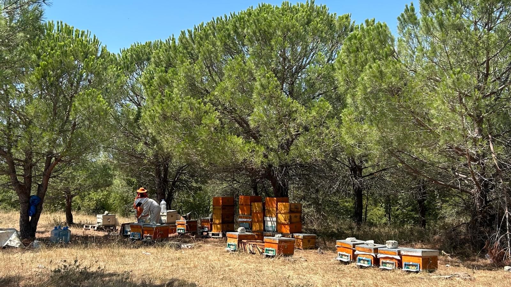

Arılığımızdan ve Yaylaköy'den kareler
Saros Doğal Yayla Balı'nın üretim süreci, Edirne Keşan Yaylaköy'ün doğal ortamında yürütülür. Aşağıdaki görüntüler arılığımızdan, hasat döneminden ve çevremizdeki yayla coğrafyasından seçilmiştir.





Yeni sezon ve üretim kareleri için WhatsApp kanalımızı takip edebilirsiniz.
WhatsApp Kanalına Katıl